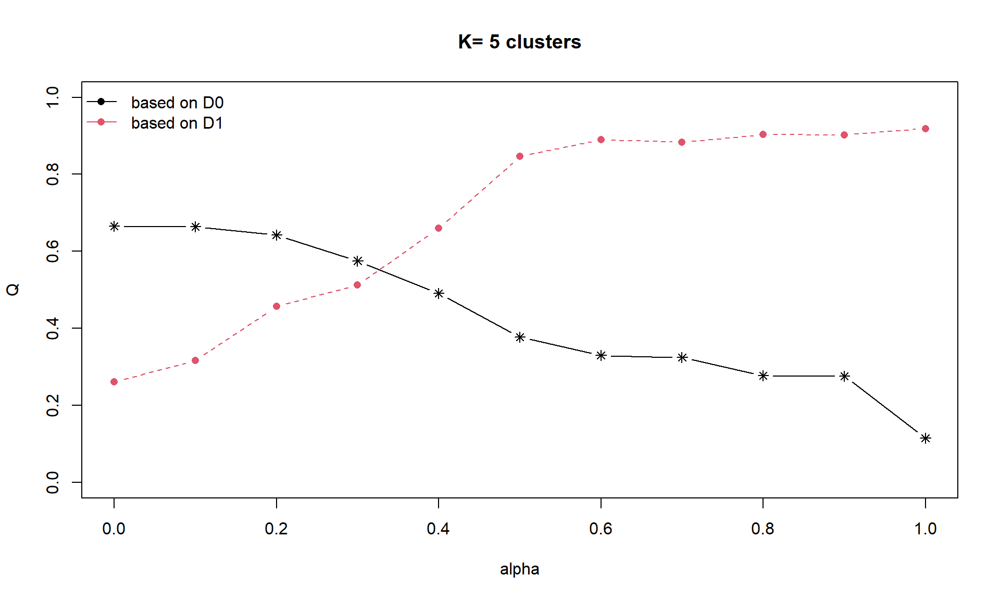

pacman::p_load(sf, tidyverse, tmap, spdep, cluster,
ClustGeo, heatmaply, GGally,
factoextra, NbClust, corrplot,
ggpubr, plotly, psych, DT)Hands-on Exercise 06: Spatially Constrained Clustering - Geospatial Analytics for Social Good
1. Overview
In this hands-on exercise, we will learn how to perform spatially constrained clustering using Myanmar township data. We will explore three clustering methods:
- Hierarchical clustering (non-spatial)
- SKATER (Spatial ’K’luster Analysis by Tree Edge Removal)
- ClustGeo (Hierarchical clustering with spatial constraints)
The analysis focuses on ICT (Information and Communication Technology) development patterns in Shan State, Myanmar.
2. Getting Started
2.1 Loading Required Packages
2.2 Data Import
2.2.1 Import Geospatial Data
# Import Myanmar township boundaries
myanmar_sf <- st_read(dsn = "data/geospatial",
layer = "myanmar_township_boundaries",
quiet = TRUE) %>%
st_transform(crs = 32647) # Transform to UTM Zone 47N for Myanmar
# Check the data structure
glimpse(myanmar_sf)Rows: 330
Columns: 15
$ OBJECTID <dbl> 250, 163, 96, 147, 263, 167, 25, 300, 284, 148, 232, 29, 20…
$ ST <chr> "Kachin", "Shan (North)", "Bago (East)", "Bago (West)", "Ma…
$ ST_PCODE <chr> "MMR001", "MMR015", "MMR007", "MMR008", "MMR010", "MMR001",…
$ DT <chr> "Mohnyin", "Mongmit", "Bago", "Pyay", "Pyinoolwin", "Bhamo"…
$ DT_PCODE <chr> "MMR001D002", "MMR015D008", "MMR007D001", "MMR008D001", "MM…
$ TS <chr> "Hpakant", "Mongmit", "Waw", "Paukkhaung", "Mogoke", "Shweg…
$ TS_PCODE <chr> "MMR001009", "MMR015017", "MMR007004", "MMR008002", "MMR010…
$ ST_2 <chr> "Kachin State", "Shan State (North)", "Bago Region (East)",…
$ LABEL2 <chr> "Hpakant\n169795", "Mongmit\n61072", "Waw\n199032", "Paukkh…
$ SELF_ADMIN <chr> NA, NA, NA, NA, NA, NA, NA, NA, NA, NA, NA, NA, "Danu", "Da…
$ ST_RG <chr> "State", "State", "Region", "Region", "Region", "State", "R…
$ T_NAME_WIN <chr> "zm;uefU", "rdk;rdwf", "a0g", "aygufacgif;", "rdk;ukwf", "a…
$ T_NAME_M3 <chr> "ဖားကန့်", "မိုးမိတ်", "ဝေါ", "ပေါက်ခေါင်း", "မိုးကုတ်", "ရွှေကူ", "ကျောက်ကြီး", "သုံ…
$ AREA <dbl> 5761.29637, 2703.61143, 952.43979, 1918.67341, 1178.50763, …
$ geometry <MULTIPOLYGON [m]> MULTIPOLYGON (((215945.2 28..., MULTIPOLYGON (…# Display first few rows
head(myanmar_sf, n = 3)Simple feature collection with 3 features and 14 fields
Geometry type: MULTIPOLYGON
Dimension: XY
Bounding box: xmin: 194025.7 ymin: 1919833 xmax: 303401 ymax: 2893747
Projected CRS: WGS 84 / UTM zone 47N
OBJECTID ST ST_PCODE DT DT_PCODE TS TS_PCODE
1 250 Kachin MMR001 Mohnyin MMR001D002 Hpakant MMR001009
2 163 Shan (North) MMR015 Mongmit MMR015D008 Mongmit MMR015017
3 96 Bago (East) MMR007 Bago MMR007D001 Waw MMR007004
ST_2 LABEL2 SELF_ADMIN ST_RG T_NAME_WIN T_NAME_M3
1 Kachin State Hpakant\n169795 <NA> State zm;uefU ဖားကန့်
2 Shan State (North) Mongmit\n61072 <NA> State rdk;rdwf မိုးမိတ်
3 Bago Region (East) Waw\n199032 <NA> Region a0g ဝေါ
AREA geometry
1 5761.2964 MULTIPOLYGON (((215945.2 28...
2 2703.6114 MULTIPOLYGON (((291179.2 25...
3 952.4398 MULTIPOLYGON (((246886.7 19...2.2.2 Import ICT Indicator Data
# Read ICT data
ict <- read_csv("data/aspatial/Shan-ICT.csv",
show_col_types = FALSE)
# Check data structure
glimpse(ict)Rows: 55
Columns: 11
$ `District Pcode` <chr> "MMR014D001", "MMR014D001", "MMR014D001", "MMR014D0…
$ `District Name` <chr> "Taunggyi", "Taunggyi", "Taunggyi", "Taunggyi", "Ta…
$ `Township Pcode` <chr> "MMR014001", "MMR014002", "MMR014003", "MMR014004",…
$ `Township Name` <chr> "Taunggyi", "Nyaungshwe", "Hopong", "Hsihseng", "Ka…
$ `Total households` <dbl> 82604, 42634, 24728, 32771, 41341, 17544, 18348, 25…
$ Radio <dbl> 30176, 13801, 5083, 8087, 11607, 7324, 8890, 10048,…
$ Television <dbl> 62388, 23640, 11272, 16568, 25285, 8862, 4781, 1635…
$ `Land line phone` <dbl> 6736, 810, 799, 1042, 1739, 348, 219, 818, 728, 800…
$ `Mobile phone` <dbl> 48461, 14973, 5192, 4755, 16900, 2849, 2207, 8321, …
$ Computer <dbl> 6705, 669, 358, 325, 1225, 226, 81, 565, 351, 381, …
$ `Internet at home` <dbl> 9746, 1604, 631, 580, 1741, 136, 152, 556, 737, 316…# Display summary statistics
summary(ict[,5:11]) # Assuming ICT indicators are in columns 5-11 Total households Radio Television Land line phone
Min. : 3318 Min. : 115 Min. : 728 Min. : 20.0
1st Qu.: 8711 1st Qu.: 1260 1st Qu.: 3744 1st Qu.: 266.5
Median :13685 Median : 2497 Median : 6117 Median : 695.0
Mean :18369 Mean : 4487 Mean :10183 Mean : 929.9
3rd Qu.:23471 3rd Qu.: 6192 3rd Qu.:13906 3rd Qu.:1082.5
Max. :82604 Max. :30176 Max. :62388 Max. :6736.0
Mobile phone Computer Internet at home
Min. : 150 Min. : 20.0 Min. : 8.0
1st Qu.: 2037 1st Qu.: 121.0 1st Qu.: 88.0
Median : 3559 Median : 244.0 Median : 316.0
Mean : 6470 Mean : 575.5 Mean : 760.2
3rd Qu.: 7177 3rd Qu.: 507.0 3rd Qu.: 630.5
Max. :48461 Max. :6705.0 Max. :9746.0 3. Data Wrangling
3.1 Extract Shan State
# Filter townships in Shan State
shan_sf <- myanmar_sf %>%
filter(ST %in% c("Shan (East)", "Shan (North)", "Shan (South)"))
# Check the result
cat("Number of townships in Shan State:", nrow(shan_sf), "\n")Number of townships in Shan State: 55 unique(shan_sf$ST)[1] "Shan (North)" "Shan (South)" "Shan (East)" # Plot to verify
tmap_mode("plot")
tm_shape(shan_sf) +
tm_polygons("ST",
palette = "Set2",
title = "Shan State") +
tm_layout(main.title = "Townships in Shan State, Myanmar",
main.title.size = 1.2,
legend.position = c("right", "bottom"))
3.2 Join Geospatial and Aspatial Data
# Prepare join key - ensure column names match
# Check column names first
cat("Shapefile columns:\n")Shapefile columns:print(names(shan_sf)) [1] "OBJECTID" "ST" "ST_PCODE" "DT" "DT_PCODE"
[6] "TS" "TS_PCODE" "ST_2" "LABEL2" "SELF_ADMIN"
[11] "ST_RG" "T_NAME_WIN" "T_NAME_M3" "AREA" "geometry" cat("\nICT data columns:\n")
ICT data columns:print(names(ict)) [1] "District Pcode" "District Name" "Township Pcode" "Township Name"
[5] "Total households" "Radio" "Television" "Land line phone"
[9] "Mobile phone" "Computer" "Internet at home"# Perform the join - 注意列名有空格！
# TS_PCODE in shapefile matches with "Township Pcode" in ICT data
shan_ict <- left_join(shan_sf,
ict,
by = c("TS_PCODE" = "Township Pcode"))
# Alternative: 如果上面的还是不行，可以先重命名ICT的列
# ict <- ict %>%
# rename(TS_PCODE = `Township Pcode`,
# DT_PCODE = `District Pcode`,
# Total_households = `Total households`,
# Land_line_phone = `Land line phone`,
# Mobile_phone = `Mobile phone`,
# Internet_at_home = `Internet at home`)
#
# shan_ict <- left_join(shan_sf, ict, by = "TS_PCODE")
# Check for missing values after join
missing_check <- shan_ict %>%
st_drop_geometry() %>%
select(Radio, Television,
`Land line phone`, `Mobile phone`,
Computer, `Internet at home`) %>%
summarise_all(~sum(is.na(.)))
print("Missing values in ICT columns:")[1] "Missing values in ICT columns:"print(missing_check) Radio Television Land line phone Mobile phone Computer Internet at home
1 0 0 0 0 0 0# Check if join was successful
cat("\nNumber of rows after join:", nrow(shan_ict), "\n")
Number of rows after join: 55 cat("Number of townships with ICT data:",
sum(!is.na(shan_ict$Radio)), "\n")Number of townships with ICT data: 55 3.3 Derive ICT Penetration Rates
# Calculate penetration rates (per 1000 households)
# 注意列名有空格，需要使用反引号
shan_ict <- shan_ict %>%
mutate(
RADIO_PR = Radio / `Total households` * 1000,
TV_PR = Television / `Total households` * 1000,
LLPHONE_PR = `Land line phone` / `Total households` * 1000,
MOBILE_PR = `Mobile phone` / `Total households` * 1000,
COMPUTER_PR = Computer / `Total households` * 1000,
INTERNET_PR = `Internet at home` / `Total households` * 1000
)
# Check the calculated rates
summary(shan_ict[c("RADIO_PR", "TV_PR", "LLPHONE_PR",
"MOBILE_PR", "COMPUTER_PR", "INTERNET_PR")]) RADIO_PR TV_PR LLPHONE_PR MOBILE_PR
Min. : 21.05 Min. :116.0 Min. : 2.78 Min. : 36.42
1st Qu.:138.95 1st Qu.:450.2 1st Qu.: 22.84 1st Qu.:190.14
Median :210.95 Median :517.2 Median : 37.59 Median :305.27
Mean :215.68 Mean :509.5 Mean : 51.09 Mean :314.05
3rd Qu.:268.07 3rd Qu.:606.4 3rd Qu.: 69.72 3rd Qu.:428.43
Max. :484.52 Max. :842.5 Max. :181.49 Max. :735.43
COMPUTER_PR INTERNET_PR geometry
Min. : 3.278 Min. : 1.041 MULTIPOLYGON :55
1st Qu.:11.832 1st Qu.: 8.617 epsg:32647 : 0
Median :18.970 Median : 22.829 +proj=utm ...: 0
Mean :24.393 Mean : 30.644
3rd Qu.:29.897 3rd Qu.: 41.281
Max. :92.402 Max. :117.985 # Check for any infinite or NaN values (divide by zero)
inf_check <- shan_ict %>%
st_drop_geometry() %>%
select(RADIO_PR:INTERNET_PR) %>%
summarise_all(~sum(is.infinite(.)))
nan_check <- shan_ict %>%
st_drop_geometry() %>%
select(RADIO_PR:INTERNET_PR) %>%
summarise_all(~sum(is.nan(.)))
print("Infinite values:")[1] "Infinite values:"print(inf_check) RADIO_PR TV_PR LLPHONE_PR MOBILE_PR COMPUTER_PR INTERNET_PR
1 0 0 0 0 0 0print("NaN values:")[1] "NaN values:"print(nan_check) RADIO_PR TV_PR LLPHONE_PR MOBILE_PR COMPUTER_PR INTERNET_PR
1 0 0 0 0 0 03.4 Data Cleaning
# Save the complete dataset first
write_rds(shan_ict, "data/rds/shan_ict_complete.rds")
# Remove rows with missing values in penetration rates
shan_ict_clean <- shan_ict %>%
filter(complete.cases(RADIO_PR, TV_PR, LLPHONE_PR,
MOBILE_PR, COMPUTER_PR, INTERNET_PR))
cat("Rows before cleaning:", nrow(shan_ict), "\n")Rows before cleaning: 55 cat("Rows after cleaning:", nrow(shan_ict_clean), "\n")Rows after cleaning: 55 cat("Rows removed:", nrow(shan_ict) - nrow(shan_ict_clean), "\n")Rows removed: 0 4. Exploratory Data Analysis
4.1 Statistical Summary
# Create summary table for ICT indicators
ict_vars <- shan_ict_clean %>%
st_drop_geometry() %>%
select(RADIO_PR, TV_PR, LLPHONE_PR, MOBILE_PR, COMPUTER_PR, INTERNET_PR)
# Summary statistics
describe(ict_vars) vars n mean sd median trimmed mad min max range
RADIO_PR 1 55 215.68 105.36 210.95 209.36 99.53 21.05 484.52 463.47
TV_PR 2 55 509.49 159.40 517.25 515.08 124.43 116.03 842.53 726.50
LLPHONE_PR 3 55 51.09 40.71 37.59 45.17 27.56 2.78 181.49 178.71
MOBILE_PR 4 55 314.05 175.67 305.27 303.29 177.50 36.42 735.43 699.01
COMPUTER_PR 5 55 24.39 20.52 18.97 20.68 13.03 3.28 92.40 89.12
INTERNET_PR 6 55 30.64 28.58 22.83 26.20 23.20 1.04 117.98 116.94
skew kurtosis se
RADIO_PR 0.48 -0.27 14.21
TV_PR -0.38 -0.23 21.49
LLPHONE_PR 1.37 1.49 5.49
MOBILE_PR 0.48 -0.34 23.69
COMPUTER_PR 1.80 2.96 2.77
INTERNET_PR 1.32 1.24 3.854.2 Distribution of ICT Indicators
# Create histogram for each ICT indicator
ict_long <- ict_vars %>%
pivot_longer(everything(),
names_to = "ICT_Type",
values_to = "Rate")
p1 <- ggplot(ict_long, aes(x = Rate)) +
geom_histogram(bins = 20, fill = "steelblue", color = "white") +
facet_wrap(~ ICT_Type, scales = "free", ncol = 3) +
theme_minimal() +
labs(title = "Distribution of ICT Penetration Rates",
subtitle = "Per 1000 households",
x = "Penetration Rate", y = "Frequency")
print(p1)
4.3 Correlation Analysis
# Correlation matrix
cor_matrix <- cor(ict_vars, use = "complete.obs")
corrplot(cor_matrix,
method = "circle",
type = "upper",
order = "hclust",
tl.col = "black",
tl.srt = 45,
title = "Correlation Matrix of ICT Indicators",
mar = c(0,0,2,0))
4.4 Spatial Distribution
# Create maps for each ICT indicator
tmap_mode("plot")
tm1 <- tm_shape(shan_ict_clean) +
tm_polygons("RADIO_PR",
style = "quantile",
palette = "Blues",
title = "Radio") +
tm_layout(main.title = "Radio Penetration",
main.title.size = 0.8)
tm2 <- tm_shape(shan_ict_clean) +
tm_polygons("TV_PR",
style = "quantile",
palette = "Greens",
title = "Television") +
tm_layout(main.title = "TV Penetration",
main.title.size = 0.8)
tm3 <- tm_shape(shan_ict_clean) +
tm_polygons("MOBILE_PR",
style = "quantile",
palette = "Oranges",
title = "Mobile Phone") +
tm_layout(main.title = "Mobile Penetration",
main.title.size = 0.8)
tm4 <- tm_shape(shan_ict_clean) +
tm_polygons("INTERNET_PR",
style = "quantile",
palette = "Purples",
title = "Internet") +
tm_layout(main.title = "Internet Penetration",
main.title.size = 0.8)
tmap_arrange(tm1, tm2, tm3, tm4, ncol = 2)
5. Hierarchical Clustering (Non-Spatial)
5.1 Data Preparation
# Extract clustering variables
cluster_vars <- shan_ict_clean %>%
st_drop_geometry() %>%
select(TS_PCODE, RADIO_PR, TV_PR, LLPHONE_PR,
MOBILE_PR, COMPUTER_PR, INTERNET_PR) %>%
column_to_rownames("TS_PCODE")
# Check for any remaining NA values
if(any(is.na(cluster_vars))) {
cat("Warning: NA values found. Removing incomplete cases.\n")
cluster_vars <- na.omit(cluster_vars)
}
# Standardize the variables
cluster_vars_scaled <- scale(cluster_vars)
summary(cluster_vars_scaled) RADIO_PR TV_PR LLPHONE_PR MOBILE_PR
Min. :-1.84729 Min. :-2.46839 Min. :-1.1867 Min. :-1.58041
1st Qu.:-0.72823 1st Qu.:-0.37192 1st Qu.:-0.6939 1st Qu.:-0.70539
Median :-0.04483 Median : 0.04865 Median :-0.3317 Median :-0.05001
Mean : 0.00000 Mean : 0.00000 Mean : 0.0000 Mean : 0.00000
3rd Qu.: 0.49724 3rd Qu.: 0.60794 3rd Qu.: 0.4577 3rd Qu.: 0.65107
Max. : 2.55176 Max. : 2.08932 Max. : 3.2033 Max. : 2.39865
COMPUTER_PR INTERNET_PR
Min. :-1.0292 Min. :-1.0357
1st Qu.:-0.6123 1st Qu.:-0.7706
Median :-0.2643 Median :-0.2734
Mean : 0.0000 Mean : 0.0000
3rd Qu.: 0.2683 3rd Qu.: 0.3722
Max. : 3.3149 Max. : 3.0558 5.2 Computing Distance Matrix
# Compute Euclidean distance
dist_matrix <- dist(cluster_vars_scaled, method = "euclidean")5.3 Hierarchical Clustering
# Perform hierarchical clustering using Ward method
hclust_ward <- hclust(dist_matrix, method = "ward.D2")
# Plot dendrogram
plot(hclust_ward, cex = 0.6, hang = -1,
main = "Hierarchical Clustering Dendrogram (Ward Method)",
xlab = "Township", sub = "")
5.4 Determine Optimal Number of Clusters
# Elbow method
fviz_nbclust(cluster_vars_scaled,
FUN = hcut,
method = "wss",
k.max = 10) +
labs(title = "Elbow Method for Optimal Clusters")
# Silhouette method
fviz_nbclust(cluster_vars_scaled,
FUN = hcut,
method = "silhouette",
k.max = 10) +
labs(title = "Silhouette Method for Optimal Clusters")
5.5 Cutting the Dendrogram
# Cut tree to form 5 clusters (adjust based on optimal k)
groups <- cutree(hclust_ward, k = 5)
# Add cluster membership to data
shan_ict_clean$CLUSTER_HC <- as.factor(groups[rownames(cluster_vars)])
# Summary of clusters
table(shan_ict_clean$CLUSTER_HC)
1 2 3 4 5
21 12 6 9 7 5.6 Visualize Clustering Results
# Plot dendrogram with cluster boxes
plot(hclust_ward, cex = 0.6, hang = -1,
main = "Hierarchical Clustering with 5 Clusters")
rect.hclust(hclust_ward, k = 5, border = 2:6)
6. Spatially Constrained Clustering - SKATER
6.1 Create Spatial Neighbors
# Create spatial neighbors using Queen contiguity
coords <- st_coordinates(st_centroid(shan_ict_clean))
k_neighbors <- knn2nb(knearneigh(coords, k = 6),
row.names = shan_ict_clean$TS_PCODE)
# Convert to neighbor list
nb_queen <- poly2nb(shan_ict_clean, queen = TRUE)
# Check neighbor summary
summary(nb_queen)Neighbour list object:
Number of regions: 55
Number of nonzero links: 264
Percentage nonzero weights: 8.727273
Average number of links: 4.8
Link number distribution:
2 3 4 5 6 7 8 9
5 9 7 21 4 3 5 1
5 least connected regions:
3 5 7 9 47 with 2 links
1 most connected region:
8 with 9 links6.2 Calculate Edge Costs
# Calculate edge costs based on dissimilarity
lcosts <- nbcosts(nb_queen, cluster_vars_scaled)
# Create weights object
nb_weights <- nb2listw(nb_queen,
lcosts,
style = "B")
# Check the weights
summary(unlist(nb_weights$weights)) Min. 1st Qu. Median Mean 3rd Qu. Max.
0.551 1.495 2.390 2.709 3.680 6.587 6.3 Compute Minimum Spanning Tree
# Create minimum spanning tree
shan_mst <- mstree(nb_weights)
# Check MST
class(shan_mst)[1] "mst" "matrix"dim(shan_mst)[1] 54 3head(shan_mst) [,1] [,2] [,3]
[1,] 31 25 1.4792876
[2,] 25 17 1.1421910
[3,] 17 54 0.7990177
[4,] 54 48 0.5509777
[5,] 54 45 1.1720984
[6,] 25 55 1.30301896.4 SKATER Clustering
# Perform SKATER clustering
skater_result <- skater(edges = shan_mst[,1:2],
data = cluster_vars_scaled,
ncuts = 4) # Creates 5 clusters
# Extract cluster membership
shan_ict_clean$CLUSTER_SKATER <- as.factor(skater_result$groups)
# Summary of SKATER clusters
table(shan_ict_clean$CLUSTER_SKATER)
1 2 3 4 5
12 14 5 12 12 6.5 Visualize SKATER Results
# Plot SKATER clustering results
tm_shape(shan_ict_clean) +
tm_polygons("CLUSTER_SKATER",
palette = "Set2",
title = "SKATER Clusters") +
tm_borders(alpha = 0.5) +
tm_layout(main.title = "Spatially Constrained Clustering (SKATER)",
main.title.size = 1.2,
legend.position = c("right", "bottom"))
7. Spatially Constrained Clustering - ClustGeo
7.1 Calculate Distance Matrices
# Non-spatial distance matrix (attribute distance)
dist_attrib <- dist(cluster_vars_scaled)
# Spatial distance matrix
dist_spatial <- st_distance(shan_ict_clean, shan_ict_clean)
dist_spatial <- as.dist(as.matrix(dist_spatial))7.2 Determine Optimal Alpha
# Test different alpha values
alpha_values <- seq(0, 1, 0.1)
clustgeo_results <- list()
for(alpha in alpha_values) {
clustgeo_results[[as.character(alpha)]] <-
hclustgeo(D0 = dist_attrib,
D1 = dist_spatial,
alpha = alpha)
}
# Create plot to choose optimal alpha
choicealpha(D0 = dist_attrib,
D1 = dist_spatial,
range.alpha = alpha_values,
K = 5,
graph = TRUE)

$Q
Q0 Q1
alpha=0 0.6651705 0.2614688
alpha=0.1 0.6638556 0.3168636
alpha=0.2 0.6422151 0.4568419
alpha=0.3 0.5751905 0.5122824
alpha=0.4 0.4905858 0.6599012
alpha=0.5 0.3775200 0.8468879
alpha=0.6 0.3299302 0.8898670
alpha=0.7 0.3242517 0.8835126
alpha=0.8 0.2773430 0.9027532
alpha=0.9 0.2761906 0.9023238
alpha=1 0.1153535 0.9184389
$Qnorm
Q0norm Q1norm
alpha=0 1.0000000 0.2846883
alpha=0.1 0.9980232 0.3450024
alpha=0.2 0.9654895 0.4974113
alpha=0.3 0.8647264 0.5577751
alpha=0.4 0.7375340 0.7185031
alpha=0.5 0.5675537 0.9220950
alpha=0.6 0.4960084 0.9688909
alpha=0.7 0.4874715 0.9619721
alpha=0.8 0.4169503 0.9829214
alpha=0.9 0.4152178 0.9824539
alpha=1 0.1734194 1.0000000
$range.alpha
[1] 0.0 0.1 0.2 0.3 0.4 0.5 0.6 0.7 0.8 0.9 1.0
$K
[1] 5
attr(,"class")
[1] "choicealpha"7.3 ClustGeo with Optimal Alpha
# Perform ClustGeo with optimal alpha (example: 0.3)
clustgeo_final <- hclustgeo(D0 = dist_attrib,
D1 = dist_spatial,
alpha = 0.3)
# Cut tree to get clusters
shan_ict_clean$CLUSTER_GEO <- as.factor(cutree(clustgeo_final, k = 5))
# Summary
table(shan_ict_clean$CLUSTER_GEO)
1 2 3 4 5
7 19 9 13 7 7.4 Visualize ClustGeo Results
# Map ClustGeo results
tm_shape(shan_ict_clean) +
tm_polygons("CLUSTER_GEO",
palette = "Set3",
title = "ClustGeo Clusters") +
tm_borders(alpha = 0.5) +
tm_layout(main.title = "ClustGeo Clustering (α = 0.3)",
main.title.size = 1.2,
legend.position = c("right", "bottom"))
8. Cluster Evaluation and Comparison
8.1 Compare All Three Methods
# Create comparison maps
tm1 <- tm_shape(shan_ict_clean) +
tm_polygons("CLUSTER_HC",
palette = "Set2",
title = "Clusters") +
tm_layout(main.title = "Hierarchical",
main.title.size = 0.9,
legend.position = c("right", "bottom"))
tm2 <- tm_shape(shan_ict_clean) +
tm_polygons("CLUSTER_SKATER",
palette = "Set2",
title = "Clusters") +
tm_layout(main.title = "SKATER",
main.title.size = 0.9,
legend.position = c("right", "bottom"))
tm3 <- tm_shape(shan_ict_clean) +
tm_polygons("CLUSTER_GEO",
palette = "Set2",
title = "Clusters") +
tm_layout(main.title = "ClustGeo",
main.title.size = 0.9,
legend.position = c("right", "bottom"))
tmap_arrange(tm1, tm2, tm3, ncol = 3)
8.2 Cluster Profiles
# Calculate mean values for each cluster
cluster_profiles_hc <- shan_ict_clean %>%
st_drop_geometry() %>%
group_by(CLUSTER_HC) %>%
summarise(across(c(RADIO_PR, TV_PR, LLPHONE_PR,
MOBILE_PR, COMPUTER_PR, INTERNET_PR),
mean, na.rm = TRUE)) %>%
mutate(Method = "Hierarchical")
cluster_profiles_skater <- shan_ict_clean %>%
st_drop_geometry() %>%
group_by(CLUSTER_SKATER) %>%
summarise(across(c(RADIO_PR, TV_PR, LLPHONE_PR,
MOBILE_PR, COMPUTER_PR, INTERNET_PR),
mean, na.rm = TRUE)) %>%
mutate(Method = "SKATER") %>%
rename(Cluster = CLUSTER_SKATER)
cluster_profiles_geo <- shan_ict_clean %>%
st_drop_geometry() %>%
group_by(CLUSTER_GEO) %>%
summarise(across(c(RADIO_PR, TV_PR, LLPHONE_PR,
MOBILE_PR, COMPUTER_PR, INTERNET_PR),
mean, na.rm = TRUE)) %>%
mutate(Method = "ClustGeo") %>%
rename(Cluster = CLUSTER_GEO)
# Display profiles
knitr::kable(cluster_profiles_hc,
caption = "Hierarchical Clustering Profiles",
digits = 2)| CLUSTER_HC | RADIO_PR | TV_PR | LLPHONE_PR | MOBILE_PR | COMPUTER_PR | INTERNET_PR | Method |
|---|---|---|---|---|---|---|---|
| 1 | 287.84 | 522.12 | 39.25 | 230.40 | 16.04 | 19.83 | Hierarchical |
| 2 | 201.92 | 534.75 | 38.27 | 349.40 | 30.06 | 45.32 | Hierarchical |
| 3 | 248.33 | 724.83 | 82.95 | 590.22 | 72.54 | 95.67 | Hierarchical |
| 4 | 139.32 | 260.41 | 18.94 | 161.24 | 7.00 | 5.14 | Hierarchical |
| 5 | 92.95 | 563.97 | 122.60 | 464.18 | 20.85 | 14.97 | Hierarchical |
8.3 Interactive Heatmap
# 期望使用的列名与友好展示名
col_map <- c(
RADIO_PR = "Radio",
TV_PR = "TV",
LLPHONE_PR = "Landline",
MOBILE_PR = "Mobile",
COMPUTER_PR = "Computer",
INTERNET_PR = "Internet"
)
# ---- 1) 预处理：容错处理列名/类型 ----
stopifnot("shan_ict_clean" %in% ls())
dat <- shan_ict_clean
# 兼容：若存在 LANDLINE_PR 列但没有 LLPHONE_PR，则做别名
if (!"LLPHONE_PR" %in% names(dat) && "LANDLINE_PR" %in% names(dat)) {
dat <- dplyr::mutate(dat, LLPHONE_PR = .data$LANDLINE_PR)
}
# 需要的列中，哪些真实存在
cols_present <- intersect(names(col_map), names(dat))
# 如果一个都没有，给出提示并优雅退出本节绘图
if (length(cols_present) == 0L) {
cat("**Note:** No ICT rate columns found in data. Skipping cluster summary/plot.\n")
} else {
# 分群列检查
if (!"CLUSTER_HC" %in% names(dat)) {
stop("Missing `CLUSTER_HC` column. Please create the cluster labels first.")
}
dat <- dplyr::mutate(dat, CLUSTER_HC = as.factor(.data$CLUSTER_HC))
# ---- 2) 汇总表（自动跳过全 NA 列）----
# 只保留真的有观测值的列
keep_cols <- purrr::map_lgl(cols_present, ~ sum(!is.na(dat[[.x]])) > 0)
cols_present <- cols_present[keep_cols]
# 若清洗后列不足 1，同样优雅退出
if (length(cols_present) == 0L) {
cat("**Note:** All ICT rate columns are entirely NA. Skipping cluster summary/plot.\n")
} else {
cluster_summary <- dat |>
sf::st_drop_geometry() |>
dplyr::group_by(CLUSTER_HC) |>
dplyr::summarise(
Count = dplyr::n(),
dplyr::across(
dplyr::all_of(cols_present),
~ round(mean(.x, na.rm = TRUE), 1)
),
.groups = "drop"
)
# 用友好名重命名（只对实际存在的列）
pretty_names <- unname(col_map[cols_present])
cluster_summary <- dplyr::rename(
cluster_summary,
!!!setNames(cols_present, pretty_names) # new = old
)
# 打印表格
knitr::kable(
cluster_summary,
caption = "Mean ICT Penetration Rates by Cluster"
)
# ---- 3) 条形图（长表）----
value_cols <- pretty_names # 已经改成友好名后的列
cluster_long <- cluster_summary |>
tidyr::pivot_longer(
cols = dplyr::any_of(value_cols),
names_to = "ICT_Type",
values_to = "Rate"
)
# 若还存在 Rate 全 NA 的情况，过滤掉
cluster_long <- dplyr::filter(cluster_long, !is.na(Rate))
if (nrow(cluster_long) == 0L) {
cat("**Note:** No non-missing values available for plotting.\n")
} else {
cluster_long$ICT_Type <- factor(
cluster_long$ICT_Type,
levels = c("Radio","TV","Landline","Mobile","Computer","Internet")
)
ggplot(cluster_long, aes(x = ICT_Type, y = Rate, fill = CLUSTER_HC)) +
geom_col(position = "dodge") +
scale_fill_brewer(palette = "Set2") +
theme_minimal() +
labs(
title = "ICT Penetration by Cluster",
x = NULL, y = "Mean Penetration (%)",
fill = "Cluster"
)
}
}
}
8.4 Parallel Coordinates Plot
# 准备数据 - 转换为长格式
parallel_data <- shan_ict_clean %>%
st_drop_geometry() %>%
select(TS_PCODE, CLUSTER_HC, RADIO_PR:INTERNET_PR) %>%
mutate(CLUSTER_HC = as.factor(CLUSTER_HC)) %>%
# 标准化数据
mutate(across(RADIO_PR:INTERNET_PR, scale)) %>%
pivot_longer(cols = RADIO_PR:INTERNET_PR,
names_to = "Variable",
values_to = "Value")
# 创建变量顺序
var_order <- c("RADIO_PR", "TV_PR", "LLPHONE_PR",
"MOBILE_PR", "COMPUTER_PR", "INTERNET_PR")
parallel_data$Variable <- factor(parallel_data$Variable, levels = var_order)
# 绘制平行坐标图
ggplot(parallel_data, aes(x = Variable, y = Value,
group = TS_PCODE,
color = CLUSTER_HC)) +
geom_line(alpha = 0.3) +
geom_point(alpha = 0.5, size = 0.8) +
scale_color_brewer(palette = "Set1", name = "Cluster") +
theme_minimal() +
theme(axis.text.x = element_text(angle = 45, hjust = 1),
plot.title = element_text(size = 14, face = "bold")) +
labs(title = "Parallel Coordinates Plot - ICT Indicators by Cluster",
x = "ICT Indicators",
y = "Standardized Value") +
facet_wrap(~ CLUSTER_HC, ncol = 5)
9. Spatial Autocorrelation Test
# Test spatial autocorrelation of clusters
# Convert cluster to numeric for Moran's I test
cluster_numeric <- as.numeric(shan_ict_clean$CLUSTER_HC)
# Create spatial weights
w <- nb2listw(nb_queen, style = "W", zero.policy = TRUE)
# Moran's I test
moran_test <- moran.test(cluster_numeric, w, zero.policy = TRUE)
print(moran_test)
Moran I test under randomisation
data: cluster_numeric
weights: w
Moran I statistic standard deviate = 3.1314, p-value = 0.0008699
alternative hypothesis: greater
sample estimates:
Moran I statistic Expectation Variance
0.255660976 -0.018518519 0.007666402 # Interpretation
if(moran_test$p.value < 0.05) {
cat("\nSignificant spatial autocorrelation detected (p <",
round(moran_test$p.value, 4), ")\n")
cat("Moran's I:", round(moran_test$estimate[1], 4), "\n")
cat("This suggests spatial clustering of the clusters.\n")
} else {
cat("\nNo significant spatial autocorrelation detected.\n")
}
Significant spatial autocorrelation detected (p < 9e-04 )
Moran's I: 0.2557
This suggests spatial clustering of the clusters.10. Save Results
# Save the final dataset with all clustering results
write_rds(shan_ict_clean, "data/rds/shan_ict_clustered.rds")
# Create summary table
summary_table <- data.frame(
Method = c("Hierarchical", "SKATER", "ClustGeo"),
Num_Clusters = c(5, 5, 5),
Spatial_Constraint = c("No", "Yes", "Partial"),
Alpha_Parameter = c(NA, NA, 0.3)
)
knitr::kable(summary_table,
caption = "Summary of Clustering Methods")| Method | Num_Clusters | Spatial_Constraint | Alpha_Parameter |
|---|---|---|---|
| Hierarchical | 5 | No | NA |
| SKATER | 5 | Yes | NA |
| ClustGeo | 5 | Partial | 0.3 |
11. Conclusions
This analysis compared three clustering methods for identifying ICT development patterns in Shan State:
- Hierarchical Clustering: Pure attribute-based clustering without spatial constraints
- SKATER: Fully spatially constrained clustering using minimum spanning tree
- ClustGeo: Mixed approach balancing attribute similarity and spatial contiguity
Key Findings:
- Hierarchical clustering may produce spatially fragmented clusters
- SKATER ensures spatial contiguity but may sacrifice attribute homogeneity
- ClustGeo provides a balance through the alpha parameter
- ICT penetration shows clear spatial patterns across Shan State townships
Recommendations:
- For policy implementation requiring geographic coherence, SKATER or ClustGeo are preferred
- The optimal alpha value for ClustGeo should be chosen based on the specific application needs
- Consider local infrastructure and accessibility when interpreting ICT development clusters